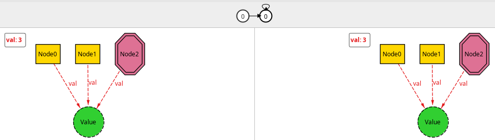
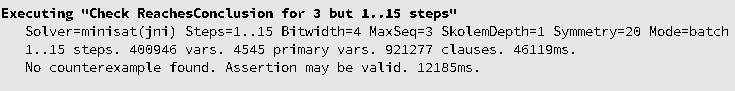
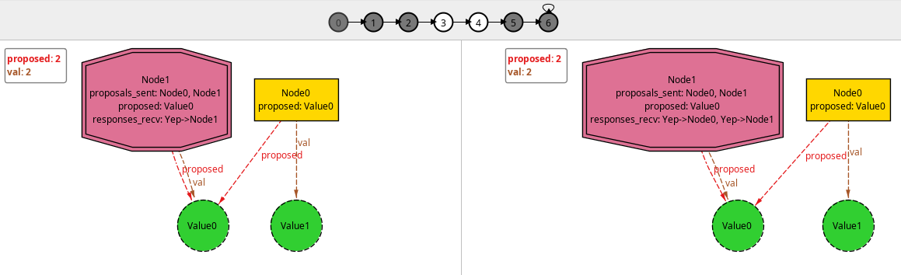

I wanted to learn how to use Alloy 6’s new temporal operators and have a sense of how they worked for modelling protocol stuff. I found Haslab’s awesome tutorial that gave me the basics to try to do a simple exercise: model two-phase commit, then visualize and check some things about it.
I still have a very long way ahead of learning formal methods. The model is certainly far from optimal, and I probably made mistakes along the way. So, as always, take the following with a grain of salt.
The two-phase commit (2PC) is a protocol that attempts to solve the problem of a group of nodes or processes trying to reach consensus if a certain transaction should be committed or aborted. In 2PC, one of the participating nodes is designated as the transaction coordinator (TC) and it is responsible for doing all the communications with the other nodes.
The first phase of the protocol can be represented as the TC sending to the participating nodes the transaction operations that need to be done, and it expects its peers to answer whether they are willing to commit those operations. If any node responds with a “no”, then the TC sends a message to all nodes aborting the transaction. Otherwise, it tells the peers to commit. It is a protocol that requires some assumptions on the kinds of failures that can happen so that properties like termination/liveness can be asserted.
In this particular model, I did not take crashes with reboot into account. Not only it’s simpler, but I also don’t know how to model that. Maybe a step that resets the “memory” of the node, and then add steps to write and read the write-ahead log? Also, this model considers only one transaction. In the future, I could try to take concurrent transactions into account somehow.
I modeled the problem as each node having one Value, which I use to represent the local state of the Node regarding the history of transactions. Each node may have a proposed Value, whose presence represents the final state in case the transaction is committed. It also may have stated its Vote about it should commit or abort the transaction (Yep and Nope, respectively).
module twophasecommit_ideal
sig Value {}
enum Vote {Yep, Nope}
sig Node {
var val: one Value,
var proposed: lone Value,
var voted: lone Vote
}
The relations annotated with var are those that’ll be allowed to vary with each step of the analysis.
One of the nodes is the TransactionCoordinator, which keeps track of the proposals and responses it sent (proposals_sent and responses_recv, respectively).
one sig TransactionCoordinator in Node {
var proposals_sent: set Node,
var responses_recv: Vote -> Node
}
Unless specified, the system so far is allowed to have any starting relations and cardinality (constrained only to the cardinality and set inclusion annotations). So, we must specify what constitutes a valid initial state, time-wise. In the beginning, there are no values proposed, no requests nor responses exchanged, and no votes.
fact init {
no proposed
no proposals_sent
no voted
no responses_recv
}
Then, we may specify the possible “steps” that change the whole state of system. The simplest one is that in which nothing changes: stutter. It can represent either that the system is in a final state or maybe some participants crashed and the system is unable to make progress.
pred stutter {
val' = val
proposed' = proposed
proposals_sent' = proposals_sent
voted' = voted
responses_recv' = responses_recv
}
The primes in the relations’ names indicate that it’s the relation value in the next step. The first real step of the protocol consists of the TC sending its proposal to the peers. Here, the TC sets its own proposed value to the value it is proposing to the other node, meaning they should agree on the same final outcome. It then registers that it sent a proposal to the given node, which I think could represent it writing the request to a write-ahead log (WAL) before sending it.
pred send_proposal[tc: TransactionCoordinator, v: Value, n : Node] {
// precondition: this node did not receive a proposal yet
n not in tc.proposals_sent
// effect
tc.val = v
tc.proposed' = v
tc.proposals_sent' = tc.proposals_sent + n
proposed' = proposed + n->v
// frame conditions
val' = val
voted' = voted
responses_recv' = responses_recv
}
We need to specify some precondition for such step to take place, then the desired effect on the state. As with the initial state, anything we don’t specify is allowed to change freely. Since it doesn’t make sense for the other nodes to suddenly vote before even receiving a proposal, for example, we need to specify the frame conditions to explicitly say that “everything else is unchanged”.
The other steps are quite similar, with their own preconditions and effects, as described above. I’ve represented the decision of commit or abort taking effect in the nodes as each one clearing the proposed value from their memory, and then changing their own value in case of a commit.
pred send_response[tc: TransactionCoordinator, vote: Vote, n : Node] {
// preconditions
no n.voted
some n.proposed
// effect
n.voted' = vote
tc.responses_recv' = tc.responses_recv + vote->n
// frame conditions
val' = val
proposed' = proposed
proposals_sent' = proposals_sent
all m : Node - n | m.voted' = m.voted
}
pred send_decision_abort[tc: TransactionCoordinator, n: Node] {
// preconditions
all m : Node | some tc.responses_recv.m
some m : Node | tc.responses_recv.m = Nope
// effect
val' = val
proposed' = proposed - n->Value
// frame conditions
voted' = voted
proposals_sent' = proposals_sent
responses_recv' = responses_recv
}
pred send_decision_commit[tc: TransactionCoordinator, n: Node] {
// preconditions
all m : Node | tc.responses_recv.m = Yep
some n.proposed
// effect
n.val' = n.proposed
all m : Node - n | {
m.val' = m.val
}
proposed' = proposed - n->Value
// frame conditions
voted' = voted
proposals_sent' = proposals_sent
responses_recv' = responses_recv
}
We then say that those are possible steps in our system:
fact step {
always (
stutter or
(some v: Value, n : Node, tc: TransactionCoordinator |
send_proposal[tc, v, n]) or
(some vote: Vote, n : Node, tc: TransactionCoordinator |
send_response[tc, vote, n]) or
(some n: Node, tc: TransactionCoordinator |
send_decision_abort[tc, n]) or
(some n: Node, tc: TransactionCoordinator |
send_decision_commit[tc, n])
)
}
With always, we specify that at all state transitions, one of these possibilities must happen. With this, we may already explore the model and ask Alloy to generate some examples for us!
run example0 {
#Node > 1
}
When I ran this, I got a trace with a single distinct state: a single node and the TC with the same initial state, and then stays forever like that. We can then manually ask the simulator to give us different possibilities and explore if our model makes sense. While making the above predicates, I made several mistakes that the visualizer showed me while exploring. I’ll defer the description of each button of the visualizer to Haslab’s tutorial. But the quick tip is to change the initial (non-var relations) with “New Config”, then proceed to the next state until you want a new next state, at which point you click “New Fork” to produce a new one. Rinse and repeat.
We may try to assert some temporal properties of our system. We want it to eventually reach some conclusion about the transaction: either abort or commit it. That final state is represented here as all nodes having received some proposal, sent their responses back, and then having cleared their pending proposals.
pred ReachesConclusion {
Node = TransactionCoordinator.proposals_sent
all m : Node | some TransactionCoordinator.responses_recv.m
no proposed
}
assert ReachesConclusion0 {
eventually ReachesConclusion
}
check ReachesConclusion0 for 3 but 1..15 steps
As one could possibly expect, when we ask the model checks to verify ReachesConclusion0, it immediately finds a counterexample. The system never makes progress, which could be that the TC crashes and never comes back.

So, in order for our protocol to eventually reach some conclusion, we need to impose some conditions on its behaviors. In particular, we may assume that, if a proposal is sent to a node, then eventually it’ll be received by the node. I think that could be represented in a real implementation as a retry mechanism on the TC side. Analogously, we may assume that eventually a response is eventually sent back, and that a decision message is finally sent. Without any those assumption, the protocol halts at that step or phase. At least that was what I saw while playing with it. This is what I believe is referred to as a fairness condition.
pred fairness {
all tc: TransactionCoordinator, n: Node | {
(eventually historically (n not in tc.proposals_sent))
=> (eventually some v: Value, tc: TransactionCoordinator |
send_proposal[tc, v, n])
(eventually always (n in tc.proposals_sent))
=> (eventually some v: Vote, tc: TransactionCoordinator |
send_response[tc, v, n])
(eventually always (n in Vote.(tc.responses_recv)))
=> (eventually some tc: TransactionCoordinator |
(send_decision_abort[tc, n] or send_decision_commit[tc, n]))
}
}
With that, we may rewrite the ReachesCondition predicate and assertion as:
pred ReachesConclusion {
Node = TransactionCoordinator.proposals_sent
all m : Node | some TransactionCoordinator.responses_recv.m
no proposed
}
assert ReachesConclusion {
fairness => eventually ReachesConclusion
}
check ReachesConclusion for 3 but 1..15 steps

With this, no counterexample is found for ReachesConclusion, so our assertion may be valid! 🍾🎉
We may also assert another silly condition and run an example that reaches some conclusion to visualize the steps the simulation takes. An example is found within 7 steps.
pred Commited {
ReachesConclusion
all m : Node | m.voted = Yep
}
assert CommitMeansAgreement {
Commited => all disj n1, n2 : Node | n1.val = n2.val
}
check CommitMeansAgreement for 3 but 1..15 steps
run example {
#Node > 1
eventually ReachesConclusion
}
run commit_example {
#Node > 1
eventually {
ReachesConclusion
all m : Node | m.voted = Yep
}
}
run abort_example {
#Node > 1
eventually {
ReachesConclusion
some m : Node | m.voted = Nope
}
}

And that’s it! I couldn’t think of other properties and things to check at the moment. The only other thing would perhaps be to consider more simultaneous transactions or writing to disk.
While trying to write the fairness condition, though, I found some strange behaviors that I’m still trying to wrap my head around. When I initially wrote the first condition (“if a proposal has not yet been sent to a node, one will eventually be sent”), I wrote it in the same form as the one in Haslab’s tutorial. That is, in the form eventually always historically ... => always eventually .... The second and third were similar, regarding the => always eventually part. Then, playing with the examples and the conclusion assertion, I noticed that I actually didn’t need the third fairness condition, which seemed very wrong. For example, using the following fairness condition is enough for the same ReachesConclusion assertion above to be checked with no counterexamples.
pred strange_fairness {
all tc: TransactionCoordinator, n: Node | {
(eventually historically (n not in tc.proposals_sent))
=> (eventually some v: Value, tc: TransactionCoordinator |
send_proposal[tc, v, n])
(eventually always (n in tc.proposals_sent))
=> (eventually always some v: Vote, tc: TransactionCoordinator |
send_response[tc, v, n])
}
}
Not that the only difference is that there’s no third condition (about sending the final decision), and I’ve added an always to the consequent of the second condition (eventually always some instead of eventually some). I couldn’t yet see why this is enough for the conclusion to be reached… Also why always is not needed (or why it would be needed) in the antecedent of the first condition.
The full file for the model and the theme I used in the visualizer can be found in this gist:
https://gist.github.com/thalesmg/3db6766585e2092fe05920d3c6f861cc